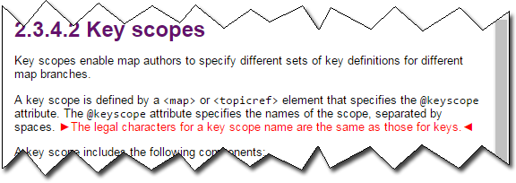

Formatting conventions in the Errata ►02◄ version of the specification
Content that has been modified ►since the DITA 1.3 version◄ of the written specification is indicated with visual cues.► This document contains changes for both DITA 1.3 Errata 01 and DITA 1.3 Errata 02.◄
Added or modified text
The following conventions are used to indicate new topics or text that has been added or modified:
- Red text
- Red glyphs (sidewise triangles) that surround the modified text
For example, the following screen capture illustrates how a new sentence is displayed:

Note that new topics are not marked with red text or glyphs in the table of contents (TOC).
Deleted text
Content that has been deleted is not displayed. The locations where text has been deleted are not marked with visual indicators. See the Darwin Information Typing Architecture (DITA) Version 1.3 Errata ►02◄ document for a complete listing of changes, including deletions.
Related links
New entries for related links are not displayed with red text or glyphs. See the Darwin Information Typing Architecture (DITA) Version 1.3 Errata ►02◄ document for a complete listing of changes, including the additional related links.